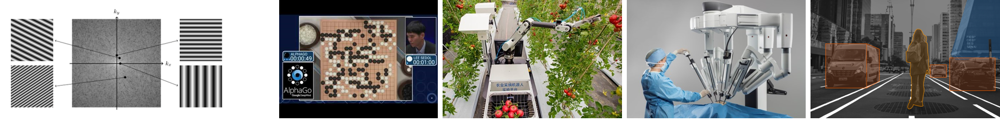

2020-2021 1st TermDigital Image Processing |
[Chinese] | ||

Course Overview
The goal of computer vision is to compute properties of the three-dimensional world from images and video. Problems in this field include identifying the 3D shape of a scene, determining how things are moving, and recognizing familiar people and objects. This course provides an introduction to computer vision, including such topics as image processing, feature extraction, object description, image segmentation, object recognition, and object tracking.
Announcements
Sep 1, 2020: Welcome to 07010667!
The course page is being updated, more information will come soon. The prerequisites of undergraduate level courses in linear algebra, probability, and machine learning are recommended.
Course Information
Course Instructor
Time and Classroom
Wednesday 8:00 am - 9:40 am, Computer Teaching Center 102Friday 10:00 am - 11:40 am, 115
Textbook
Rafael C. Gonzalez and Richard E. Woods. Digital Image Processing (Third Edition). linkGrading Policy
Attendance: 20%Assignments: 30%
Course project: 50%